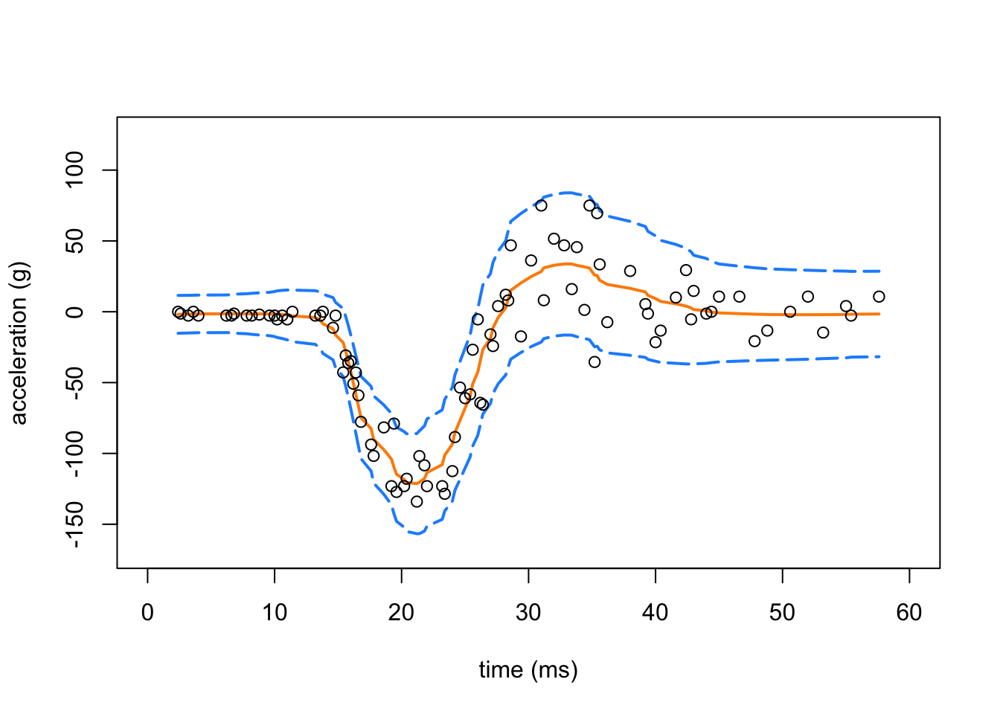
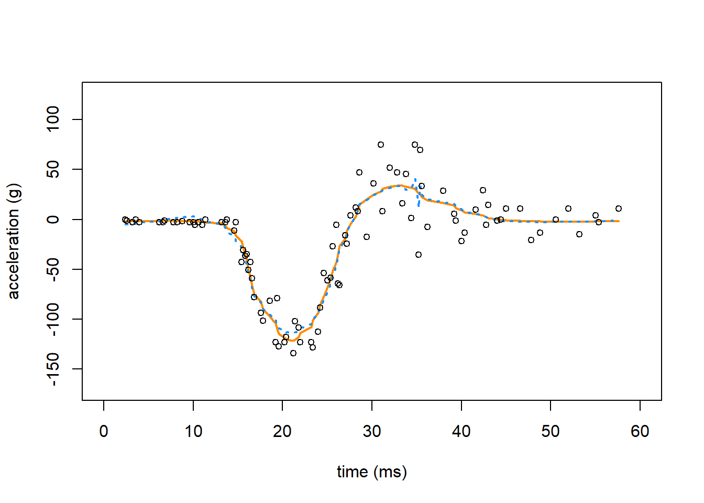
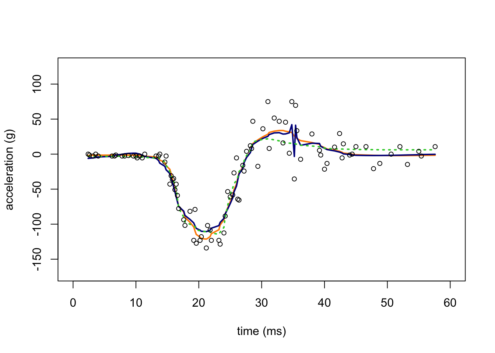

Last updated: 2018-11-06
workflowr checks: (Click a bullet for more information) ✔ R Markdown file: up-to-date
Great! Since the R Markdown file has been committed to the Git repository, you know the exact version of the code that produced these results.
✔ Environment: empty
Great job! The global environment was empty. Objects defined in the global environment can affect the analysis in your R Markdown file in unknown ways. For reproduciblity it’s best to always run the code in an empty environment.
✔ Seed:
set.seed(1)
The command set.seed(1) was run prior to running the code in the R Markdown file. Setting a seed ensures that any results that rely on randomness, e.g. subsampling or permutations, are reproducible.
✔ Session information: recorded
Great job! Recording the operating system, R version, and package versions is critical for reproducibility.
✔ Repository version: 3b7071b
wflow_publish or wflow_git_commit). workflowr only checks the R Markdown file, but you know if there are other scripts or data files that it depends on. Below is the status of the Git repository when the results were generated:
Ignored files:
Ignored: dsc/code/Wavelab850/MEXSource/CPAnalysis.mexmac
Ignored: dsc/code/Wavelab850/MEXSource/DownDyadHi.mexmac
Ignored: dsc/code/Wavelab850/MEXSource/DownDyadLo.mexmac
Ignored: dsc/code/Wavelab850/MEXSource/FAIPT.mexmac
Ignored: dsc/code/Wavelab850/MEXSource/FCPSynthesis.mexmac
Ignored: dsc/code/Wavelab850/MEXSource/FMIPT.mexmac
Ignored: dsc/code/Wavelab850/MEXSource/FWPSynthesis.mexmac
Ignored: dsc/code/Wavelab850/MEXSource/FWT2_PO.mexmac
Ignored: dsc/code/Wavelab850/MEXSource/FWT_PBS.mexmac
Ignored: dsc/code/Wavelab850/MEXSource/FWT_PO.mexmac
Ignored: dsc/code/Wavelab850/MEXSource/FWT_TI.mexmac
Ignored: dsc/code/Wavelab850/MEXSource/IAIPT.mexmac
Ignored: dsc/code/Wavelab850/MEXSource/IMIPT.mexmac
Ignored: dsc/code/Wavelab850/MEXSource/IWT2_PO.mexmac
Ignored: dsc/code/Wavelab850/MEXSource/IWT_PBS.mexmac
Ignored: dsc/code/Wavelab850/MEXSource/IWT_PO.mexmac
Ignored: dsc/code/Wavelab850/MEXSource/IWT_TI.mexmac
Ignored: dsc/code/Wavelab850/MEXSource/LMIRefineSeq.mexmac
Ignored: dsc/code/Wavelab850/MEXSource/MedRefineSeq.mexmac
Ignored: dsc/code/Wavelab850/MEXSource/UpDyadHi.mexmac
Ignored: dsc/code/Wavelab850/MEXSource/UpDyadLo.mexmac
Ignored: dsc/code/Wavelab850/MEXSource/WPAnalysis.mexmac
Ignored: dsc/code/Wavelab850/MEXSource/dct_ii.mexmac
Ignored: dsc/code/Wavelab850/MEXSource/dct_iii.mexmac
Ignored: dsc/code/Wavelab850/MEXSource/dct_iv.mexmac
Ignored: dsc/code/Wavelab850/MEXSource/dst_ii.mexmac
Ignored: dsc/code/Wavelab850/MEXSource/dst_iii.mexmac
Untracked files:
Untracked: analysis/#spikesdemo.Rmd#
Untracked: analysis/.#spikesdemo.Rmd
Untracked: analysis/motorcycle.R
| File | Version | Author | Date | Message |
|---|---|---|---|---|
| Rmd | 3b7071b | Peter Carbonetto | 2018-11-06 | wflow_publish(“motorcycle.Rmd”) |
| html | 3ce045f | Peter Carbonetto | 2018-11-06 | Added explanatory text to motorcycle example. |
| Rmd | 4a73ed9 | Peter Carbonetto | 2018-11-06 | wflow_publish(“motorcycle.Rmd”) |
| Rmd | fd51be8 | Peter Carbonetto | 2018-11-06 | wflow_publish(“motorcycle.Rmd”) |
| html | fdc9c33 | Peter Carbonetto | 2018-11-06 | Build site. |
| Rmd | 1ab1447 | Peter Carbonetto | 2018-11-06 | wflow_publish(“motorcycle.Rmd”) |
| Rmd | f0059b3 | Peter Carbonetto | 2018-11-06 | wflow_publish(“motorcycle.Rmd”) |
| Rmd | 507a261 | Peter Carbonetto | 2018-11-06 | Having trouble re-building spikesdemo.html. |
| Rmd | 7f2ef79 | Peter Carbonetto | 2018-10-10 | wflow_publish(“motorcycle.Rmd”) |
| Rmd | 3b3d373 | Peter Carbonetto | 2018-10-09 | Some more improvements to the motorcycle example. |
| Rmd | 757462c | Peter Carbonetto | 2018-10-09 | Working on motorcycle .Rmd example. |
This is an illustration of “smoothing via adaptive shrinkage” (SMASH) applied to the Motorcycle Accident data. This implements the “illustrative application” presented in Sec. 5.1 of the manuscript.
To run this example on your own computer, please follow these setup instructions. These instructions assume you already have R and/or RStudio installed on your computer.
Download or clone the git repository on your computer.
Launch R, and change the working directory to be the “analysis” folder inside your local copy of the git repository.
Install the devtools, wavethresh and EbayesThresh packages used here and in the code below:
install.packages(c("devtools","wavethresh","EbayesThresh"))Finally, install the ashr and smashr packages from GitHub:
library(devtools)
install_github("stephens999/ashr",upgrade_dependencies = FALSE)
install_github("stephenslab/smashr",upgrade_dependencies = FALSE)See the “Session Info” at the bottom for the versions of the software and R packages that were used to generate the results shown below.
Load the MASS, lattice wavethresh, EbayesThresh and smashr packages. The MASS package is loaded only for the Motorcycle Accident data. Some additional functions are defined in functions.motorcycle.R.
library(MASS)
library(lattice)
library(smashr)
library(wavethresh)
library(EbayesThresh)
source("../code/motorcycle.functions.R")Note that the MASS and lattice packages are included in most standard R installations, so you probably don’t need to install these packages separately.
Load the motorcycle data from the MASS package, and order the data points by time.
data(mcycle)
x.ini.mc <- sort(mcycle$times)
y.ini.mc <- mcycle$accel[order(mcycle$times)]Apply SMASH to the Motorcycle Accident data set.
res.mc <- smash.wrapper(x.ini.mc,y.ini.mc)Create a plot showing the Motorcycle Accident data and the smash estimates (with the dashed red lines showing the confidence intervals).
plot(res.mc$x,res.mc$mu.est,type = "l",
ylim = c(min(res.mc$y - 2 * sqrt(res.mc$var.est)),
max(res.mc$y + 2 * sqrt(res.mc$var.est))),
xlab = "time (ms)", ylab = "acceleration (g)",lwd = 2,
col = "darkorange",xlim = c(0,60),xaxp = c(0,60,6))
lines(res.mc$x, res.mc$mu.est + 2*sqrt(res.mc$var.est),lty = 5,
lwd = 2,col = "dodgerblue")
lines(res.mc$x,res.mc$mu.est - 2*sqrt(res.mc$var.est),
lty = 5,lwd = 2,col = "dodgerblue")
points(res.mc$x,res.mc$y,pch = 1,cex = 1,col = "black")
Apply SMASH (assuming equal variances) to the Motorcycle Accident data set.
res.cons.mc <- smash.cons.wrapper(x.ini.mc,y.ini.mc)Apply TI thresholding to the Motorcycle Accident data set.
res.ti.cons.mc <- tithresh.cons.wrapper(x.ini.mc,y.ini.mc)Apply TI thresholding to the Motorcycle Accident data, this time using the variances estimated by SMASH.
res.ti.mc <- tithresh.wrapper(x.ini.mc,y.ini.mc)In this second plot, we compare the mean estimate provided by SMASH (with heteroskedastic variances; orange line) against homoskedastic SMASH (dotted, light blue line).
plot(res.mc$x,res.mc$mu.est,type = "l",
ylim = c(min(res.mc$y - 2 * sqrt(res.mc$var.est)),
max(res.mc$y + 2 * sqrt(res.mc$var.est))),
xlab = "time (ms)",ylab = "acceleration (g)",lwd = 2,
col = "darkorange",xlim = c(0,60),xaxp = c(0,60,6))
lines(res.cons.mc$x,res.cons.mc$mu.est,lwd = 2,lty = "dotted",
col = "dodgerblue")
points(res.mc$x,res.mc$y,pch = 1,cex = 0.8,col = "black")
| Version | Author | Date |
|---|---|---|
| 3ce045f | Peter Carbonetto | 2018-11-06 |
And in this next plot, we compare the SMASH estimates (the orange line) against the the mean estimates obtained by TI thresholding (dark blue line), and TI thresholding when the variances have been estimated by SMASH (dotted green line).
plot(res.mc$x,res.mc$mu.est,type = "l",
ylim = c(min(res.mc$y - 2 * sqrt(res.mc$var.est)),
max(res.mc$y + 2 * sqrt(res.mc$var.est))),
xlab = "time (ms)",ylab = "acceleration (g)",lwd = 2,
col = "darkorange",xlim = c(0,60),xaxp = c(0,60,6))
lines(res.ti.cons.mc$x,res.ti.cons.mc$mu.est,lwd = 2,lty = "solid",
col = "darkblue")
lines(res.ti.mc$x,res.ti.mc$mu.est,lwd = 2,col = "limegreen",lty = "dotted")
points(res.mc$x,res.mc$y,pch = 1,cex = 0.8,col = "black")
The TI thresholding estimate and the SMASH estimate with homoskedastic variances both show notable artifacts. When the TI thresholding method is provided with the SMASH variance estimate, the mean signal is substantially smoother.
sessionInfo()
# R version 3.4.3 (2017-11-30)
# Platform: x86_64-apple-darwin15.6.0 (64-bit)
# Running under: macOS High Sierra 10.13.6
#
# Matrix products: default
# BLAS: /Library/Frameworks/R.framework/Versions/3.4/Resources/lib/libRblas.0.dylib
# LAPACK: /Library/Frameworks/R.framework/Versions/3.4/Resources/lib/libRlapack.dylib
#
# locale:
# [1] en_US.UTF-8/en_US.UTF-8/en_US.UTF-8/C/en_US.UTF-8/en_US.UTF-8
#
# attached base packages:
# [1] stats graphics grDevices utils datasets methods base
#
# other attached packages:
# [1] EbayesThresh_1.4-12 wavethresh_4.6.8 smashr_1.2-0
# [4] lattice_0.20-35 MASS_7.3-48
#
# loaded via a namespace (and not attached):
# [1] Rcpp_0.12.19 knitr_1.20 whisker_0.3-2
# [4] magrittr_1.5 workflowr_1.1.1 REBayes_1.3
# [7] pscl_1.5.2 doParallel_1.0.11 SQUAREM_2017.10-1
# [10] foreach_1.4.4 ashr_2.2-23 stringr_1.3.1
# [13] caTools_1.17.1 tools_3.4.3 parallel_3.4.3
# [16] grid_3.4.3 data.table_1.11.4 R.oo_1.21.0
# [19] git2r_0.23.0 iterators_1.0.9 htmltools_0.3.6
# [22] assertthat_0.2.0 yaml_2.2.0 rprojroot_1.3-2
# [25] digest_0.6.17 Matrix_1.2-12 bitops_1.0-6
# [28] codetools_0.2-15 R.utils_2.6.0 evaluate_0.11
# [31] rmarkdown_1.10 stringi_1.2.4 compiler_3.4.3
# [34] Rmosek_8.0.69 backports_1.1.2 R.methodsS3_1.7.1
# [37] truncnorm_1.0-8This reproducible R Markdown analysis was created with workflowr 1.1.1